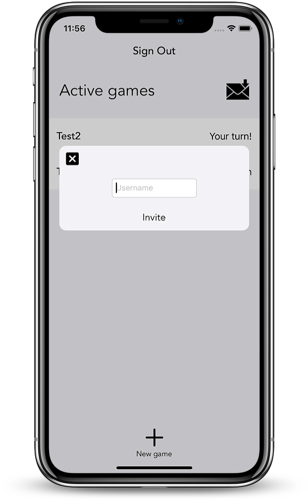
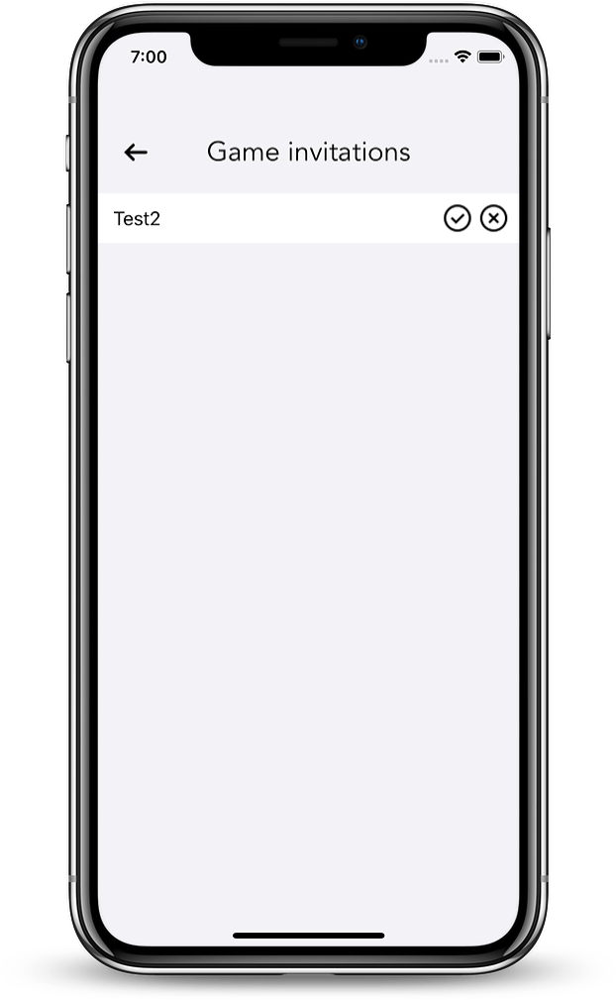
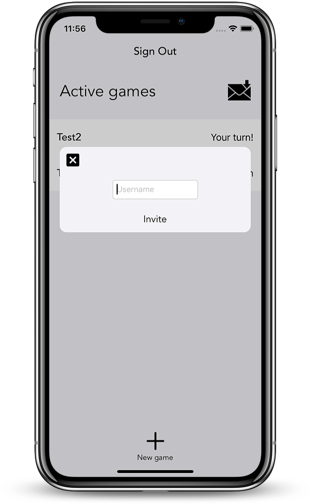
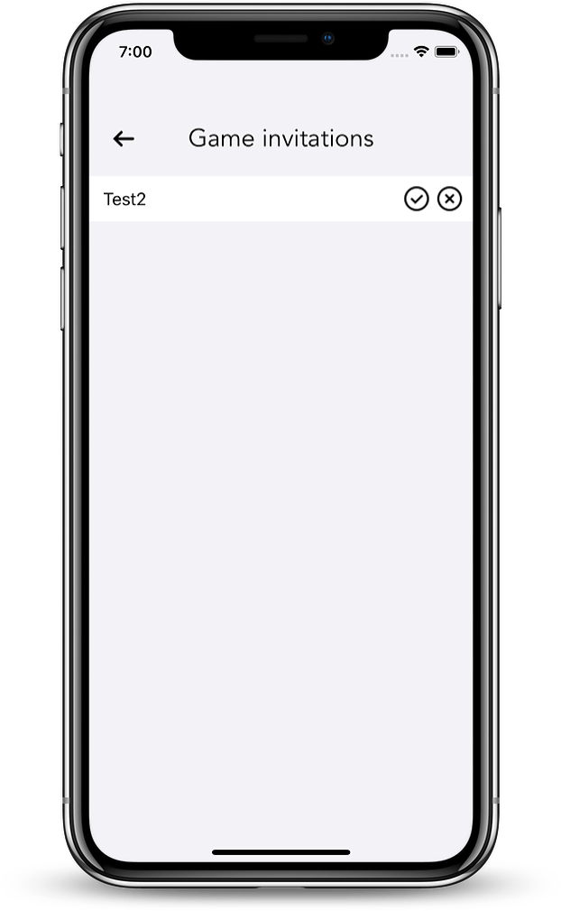

GitHub
Tic Tac Toe (Multiplayer)
iOS application that is a multiplayer Tic Tac Toe game. You create an account and then you are able to invite other people to a new game using their created username. Once you have invited a person and they accepted, you can play tic tac toe in real-time.